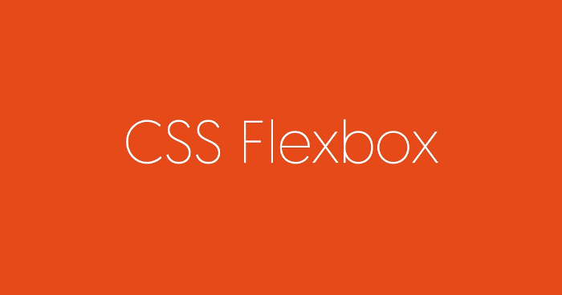
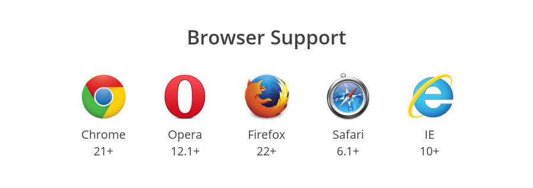
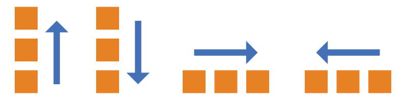
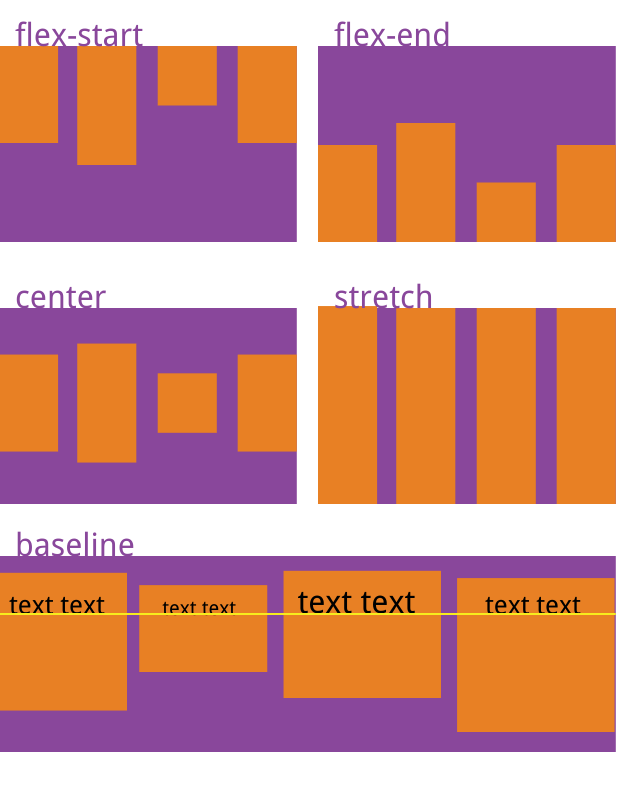

Web page layout is a key application of CSS.

The traditional solution for layout is based onthe box model, relying ondisplayproperty +positionproperty +floatproperties. It is very inconvenient for special layouts, such as,vertical centeringwhich is not easy to achieve.

In 2009, W3C proposed a new solution — Flex layout — that can implement various page layouts simply, completely, and responsively. Currently, it has been supported by all browsers, which means you can safely use this feature now.

Flex layout will become the preferred solution for layout in the future. This article introduces the syntax of Flex layout.
The following content mainly references these two articles:A Complete Guide to Flexbox 和 A Visual Guide to CSS3 Flexbox Properties。
1. What is Flex layout?
Flex is the abbreviation of Flexible Box, meaning "flexible layout", used to provide maximum flexibility for the box model.
Any container can be specified as a Flex layout.
.box{
display: flex;
}
Inline elements can also use Flex layout.
.box{
display: inline-flex;
}
Browsers with Webkit kernel must add the -webkit prefix.
.box{
display: -webkit-flex; /* Safari */
display: flex;
}
Note that after setting Flex layout, the float, clear, and vertical-align properties of child elements will become invalid.
2. Basic Concepts
Elements that adopt Flex layout are called Flex containers (flex container), abbreviated as "container". All its child elements automatically become container members, called Flex items (flex item), abbreviated as "item".

By default, the container has two axes: the horizontal main axis (main axis) and the vertical cross axis (cross axis). The start position of the main axis (the intersection with the border) is called main start, and the end position is called main end; the start position of the cross axis is called cross start, and the end position is called cross end.
Items are arranged along the main axis by default. The main axis space occupied by a single item is called main size, and the cross axis space occupied is called cross size.
3. Properties of the Container
The following 6 properties are set on the container.
- flex-direction
- flex-wrap
- flex-flow
- justify-content
- align-items
- align-content
3.1 flex-direction property
The flex-direction property determines the direction of the main axis (i.e., the direction in which items are arranged).
.box {
flex-direction: row | row-reverse | column | column-reverse;
}

It can have 4 values.
- row (default): the main axis is horizontal, starting from the left.
- row-reverse: the main axis is horizontal, starting from the right.
- column: the main axis is vertical, starting from the top.
- column-reverse: the main axis is vertical, starting from the bottom.
3.2 flex-wrap property
By default, items are arranged on a single line (also called "axis"). The flex-wrap property defines how to wrap if one axis cannot fit all items.

.box{
flex-wrap: nowrap | wrap | wrap-reverse;
}
It can take three values.
(1) nowrap (default): no wrapping.

(2) wrap: wrapping, first line at the top.

(3) wrap-reverse: wrapping, first line at the bottom.

3.3 flex-flow
The flex-flow property is a shorthand for the flex-direction property and the flex-wrap property, with a default value of row nowrap.
.box {
flex-flow: <flex-direction> <flex-wrap>;
}
3.4 justify-content property
The justify-content property defines the alignment of items on the main axis.
.box {
justify-content: flex-start | flex-end | center | space-between | space-around;
}

It can take 5 values. The specific alignment is related to the direction of the axis. The following assumes the main axis is from left to right.
- flex-start (default): left-aligned
- flex-end: right-aligned
- center: centered
- space-between: aligned at both ends, with equal spacing between items.
- space-around: the spacing on both sides of each item is equal. Therefore, the spacing between items is twice the spacing between items and the border.
3.5 align-items property
The align-items property defines how items are aligned on the cross axis.
.box {
align-items: flex-start | flex-end | center | baseline | stretch;
}

It can take 5 values. The specific alignment is related to the direction of the cross axis. The following assumes the cross axis is from top to bottom.
- flex-start: aligned to the start of the cross axis.
- flex-end: aligned to the end of the cross axis.
- center: aligned to the center of the cross axis.
- baseline: aligned to the baseline of the first line of text in the item.
- stretch (default): if the item has no height set or is set to auto, it will fill the entire height of the container.
3.6 align-content property
The align-content property defines the alignment of multiple axes. If the items have only one axis, this property has no effect.
.box {
align-content: flex-start | flex-end | center | space-between | space-around | stretch;
}

This property can take 6 values.
- flex-start: aligned with the start of the cross axis.
- flex-end: aligned with the end of the cross axis.
- center: aligned with the center of the cross axis.
- space-between: aligned with both ends of the cross axis, with intervals between axes evenly distributed.
- space-around: the interval on both sides of each axis is equal. Therefore, the interval between axes is twice the interval between axes and the border.
- stretch (default): the axis fills the entire cross axis.
4. Properties of the Items
The following 6 properties are set on the items.
- order
- flex-grow
- flex-shrink
- flex-basis
- flex
- align-self
4.1 order property
The order property defines the order in which items are arranged. The smaller the value, the earlier the arrangement. The default is 0.
.item {
order: <integer>;
}

4.2 flex-grow property
The flex-grow property defines the proportion by which an item can grow, with a default of 0, meaning that even if there is remaining space, it will not grow.
.item {
flex-grow: <number>; /* default 0 */
}

If all items have a flex-grow property of 1, they will equally divide the remaining space (if any). If one item has a flex-grow property of 2 and the others have 1, the former will occupy twice as much remaining space as the others.
4.3 flex-shrink property
The flex-shrink property defines the proportion by which an item can shrink, with a default of 1, meaning that if space is insufficient, the item will shrink.
.item {
flex-shrink: <number>; /* default 1 */
}

If all items have a flex-shrink property of 1, they will shrink proportionally when space is insufficient. If one item has a flex-shrink property of 0 and the others have 1, the former will not shrink when space is insufficient.
Negative values are invalid for this property.
4.4 flex-basis property
The flex-basis property defines the main axis space (main size) occupied by an item before allocating extra space. The browser calculates whether there is extra space on the main axis based on this property. Its default value is auto, which is the original size of the item.
.item {
flex-basis: <length> | auto; /* default auto */
}
It can be set to a value like the width or height property (for example, 350px), and the item will occupy a fixed space.
4.5 flex property
The flex property is a shorthand for flex-grow, flex-shrink, and flex-basis, with a default value of 0 1 auto. The latter two properties are optional.
.item {
flex: none | [ <'flex-grow'> <'flex-shrink'>? || <'flex-basis'> ]
}
This property has two shortcut values: auto (1 1 auto) and none (0 0 auto).
It is recommended to use this property first, rather than writing three separate properties, because the browser will calculate the related values.
4.6 align-self property
The align-self property allows a single item to have a different alignment from other items, and can override the align-items property. The default value is auto, which means inheriting the align-items property of the parent element; if there is no parent element, it is equivalent to stretch.
.item {
align-self: auto | flex-start | flex-end | center | baseline | stretch;
}

This property can take 6 values. Except for auto, the others are exactly the same as the align-items property.
Source: http://www.ruanyifeng.com/blog/2015/07/flex-grammar.html
Click me to share notes
<p style="font-size:14px;">Notes must be an extension of this article's content!</p><br> <p style="font-size:12px;"><a href="../tougao.html" target="_blank">To submit an article, click here</a></p> <p style="font-size:14px;"><a href="./runoob-user-test-intro.html" target="_blank">How to get a registration invitation code</a></p> <h3 class="text-muted"><i class="fa fa-info-circle" aria-hidden="true"></i> You must <a href=".." class="runoob-pop">log in</a> before sharing notes!</h3> <p><a href="./runoob-user-test-intro.html" target="_blank">How to get a registration invitation code</a></p>